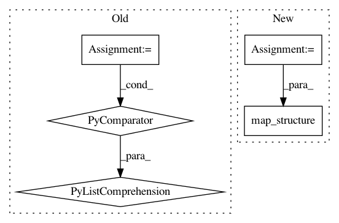

1775e89f262111791fabfd40f80a24f74738fe54,rllib/models/tf/tf_action_dist.py,MultiActionDistribution,deterministic_sample,#MultiActionDistribution#,409
Before Change
@override(ActionDistribution)
def deterministic_sample(self):
return TupleActions(
[s.deterministic_sample() for s in self.child_distributions])
@override(TFActionDistribution)
def sampled_action_logp(self):
After Change
@override(ActionDistribution)
def deterministic_sample(self):
child_distributions = tree.unflatten_as(self.action_space_struct,
self.flat_child_distributions)
return tree.map_structure(lambda s: s.deterministic_sample(),
child_distributions)
@override(TFActionDistribution)
def sampled_action_logp(self):
p = self.flat_child_distributions[0].sampled_action_logp()
In pattern: SUPERPATTERN
Frequency: 4
Non-data size: 5
Instances
Project Name: ray-project/ray
Commit Name: 1775e89f262111791fabfd40f80a24f74738fe54
Time: 2020-04-28
Author: sven@anyscale.io
File Name: rllib/models/tf/tf_action_dist.py
Class Name: MultiActionDistribution
Method Name: deterministic_sample
Project Name: deepmind/sonnet
Commit Name: ce11b92597b32bccf9999e94550855e55e02da9b
Time: 2018-10-16
Author: adriap@google.com
File Name: sonnet/python/modules/basic_rnn.py
Class Name: DeepRNN
Method Name: _build
Project Name: ray-project/ray
Commit Name: 1775e89f262111791fabfd40f80a24f74738fe54
Time: 2020-04-28
Author: sven@anyscale.io
File Name: rllib/models/tf/tf_action_dist.py
Class Name: MultiActionDistribution
Method Name: sample
Project Name: ray-project/ray
Commit Name: 1775e89f262111791fabfd40f80a24f74738fe54
Time: 2020-04-28
Author: sven@anyscale.io
File Name: rllib/models/tf/tf_action_dist.py
Class Name: MultiActionDistribution
Method Name: logp